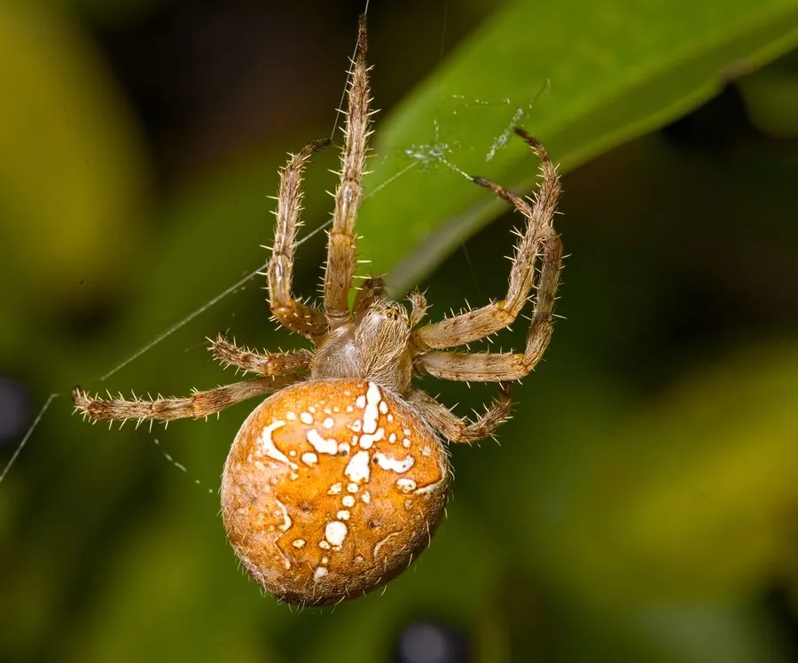

蛛形动物 · 动物界
十字园蛛 Araneus diadematus

欧洲和北美常见的结网蜘蛛，腹部背面有白色十字形斑纹，雌蛛体色多变，秋季结大圆网捕食飞虫。
- 分类
- 门节肢动物门纲蛛形纲目蜘蛛目科园蛛科属园蛛属
- 栖息环境
- 树林、灌丛、花园、屋檐和栅栏之间，多在傍晚结圆网
- 地理分布
- 欧洲和北美广泛分布，其他温带地区有引入记录
- 保护级别
- IUCN 暂无评估；中国未列入国家重点保护名录
物种志
十字园蛛雌蛛体长 10–15 mm，雄蛛 5–7 mm，腹部圆鼓，体色从浅黄、橙红到深褐不等，背面有由白色小点组成的十字形斑纹，这是它最醒目的标志；头胸部较小，八足细长，足上有刺毛。
它原产欧洲和北美，栖息于树林、灌丛、花园、屋檐和栅栏之间，黄昏时结出直径可达 40 cm 的大型圆网，网线带黏性，捕食蚊、蝇、蛾类等飞虫。雌蛛把卵囊藏在树皮或墙角，每个卵囊含数百枚卵，幼蛛孵化后扩散。十字园蛛毒性很弱，对人基本无害；它的蛛丝强度和弹性是材料学研究的热点。受惊时它会迅速沿丝线逃到网边隐蔽处。目前 IUCN 暂无评估，种群数量稳定。
形态与习性
- 食性蚊、蝇、蛾类等飞行昆虫
- 体长雌蛛 10–15 mm，雄蛛 5–7 mm
- 识别腹部背面有白色小点组成的十字形斑纹
- 网型大型圆网，直径可达 40 cm
- 繁殖卵生，每个卵囊含数百枚卵
- 毒性毒性很弱，对人基本无害
趣味知识
- 十字园蛛腹部的白色斑点拼成一个十字，名字由此而来。
- 它每晚结出的圆网直径可达 40 厘米，清晨常挂满露珠。
- 雌蛛的体色可以从浅黄一直变到深褐，个体差异很大。